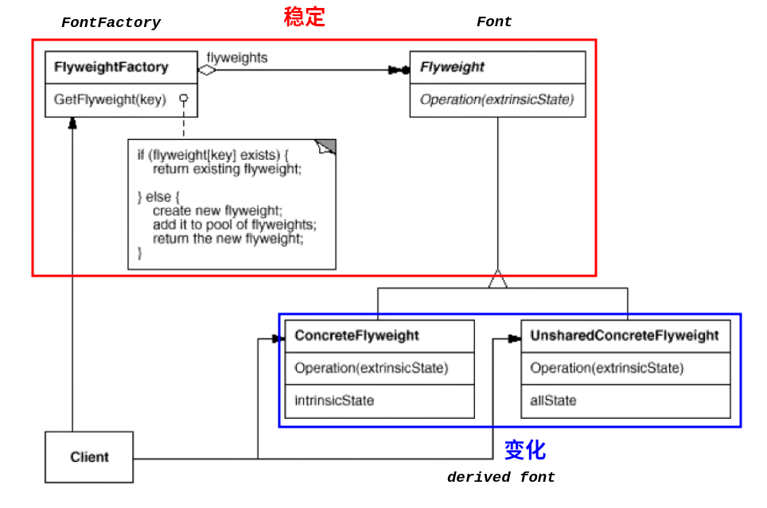

C++ Design Patterns
李建忠 C++
设计模式
《设计模式 可复用面向对象软件的基础》
设计模式初探
什么是设计模式？
每一个模式描述了一个在我们周围不断重复发生的问题，以及该问题的解决方案的核心。这样，你就能一次又一次地使用该方案而不必做重复劳动”。
——Christopher Alexander
“设计模式”某种程度上是为了弥补语言上的不足实现的。
底层思维与抽象思维
向下：深入理解三大面向对象机制
封装：隐藏内部实现
继承：复用现有代码
多态：改写对象行为
向上：深刻把握面向对象机制带来的抽象意义，理解如何用这些机制表达现实世界，用抽象思维进行评判，掌握什么是“好的面向对象设计”
需求的变化很多时候会冲击整个软件架构，因此在设计软件时要考虑应对复杂性的方式：
Is-a与Has-a
Has-a与Is-a的区别
Is-a：class A is a kind of class B，A类是B类。
通过public继承 实现Is-a，最大化保留了基类的public接口，并在基类的基础上进行补充和扩展。
例如： class B=哺乳动物的主要特征（Base），class
A=人的主要特征（Derived），由于哺乳动物是人的主要属性，A需要继承B的全部接口，因此
A is B
Has-a：class A has a kind of
B，A类是B类的一部分。
通过private继承 实现Has-a，完全舍弃了基类的public接口。
例如： class B=机翼（Base），class
A=飞机（Derived），由于机翼是飞机的部分组成，但机翼的信息只需提供给飞机使用，由飞机最后给出供外部使用的public接口，因此飞机（A）不应该保留机翼（B）的任何接口，此时A
has a kind of B。
面向对象设计原则
面向对象针对的问题是：对代码结构造成冲击的需求变化
理解隔离变化
从宏观层面看，面向对象的构建方式更能适应软件的变化，能将变化所带来的影响减为最小
各司其职
从微观层面看，面向对象的方式更强调的各个类的“责任”
由于需求变化导致的新增类型不应该影响原来类型的实现 -- 各负其职
对象是什么
从语言实现层面来看，对象封装了代码和数据
从规格层面讲，对象是一系列可被使用的公共接口
从概念层面讲，对象是某种拥有责任的抽象
八大设计原则
依赖倒置原则（DIP）
高层模块（稳定）不应该依赖于低层模块（变化），二者都应该依赖于抽象（稳定）
抽象（稳定）不应该依赖于实现细节（变化），实现细节应该依赖于抽象
开放封闭原则（OCP）
对扩展开放，对更改封闭
类模块应该是可扩展的，但是不可修改
单一职责原则（SRP）
一个类应该仅有一个引起它变化的原因
变化的方向隐含着类的责任
Liskov替换原则（LSP）
实际使用时，子类必须能够替换它们的基类（IS-A ,
subsumption）
继承表达类型抽象（一般化与特殊化）
接口隔离原则（ISP）
不应该强迫客户程序依赖它们不用的方法
接口应该小而完备
组合优于继承
类继承通常为“白箱复用”，对象组合通常为“黑箱复用”
继承在某种程度上破坏了封装性，子类父类耦合度高
对象组合只要求被组合的对象具有良好定义的接口，耦合度低
封装变化点 使用封装来创建对象之间的分界层，让设计者可以在分界层的一侧进行修改，而不会对另一侧产生不良的影响，从而实现层之间的松耦合'
针对接口编程，而不针对实现编程
不将变量类型声明为某个特定的具体类，而是声明为某个接口
客户程序无需获知对象的具体类型，只需要知道对象所具有的接口
减少系统中各部分的依赖关系，从而实现“高内聚，松耦合”的类型设计方案
将设计原则提升为设计经验
设计习语（Design
Idioms） ：描述与特定编程语言相关的低层模式、技巧与惯用法
设计模式（Design
Patterns） ：描述类与相互通信的对象之间的组织关系，包括它们的角色、职责、协作方式等方面
架构模式（Architectural
Patterns） ：描述系统中与基本结构组织关系密切的高层模式，包括子系统划分、职责，以及如何组织它们之间关系的规则
23种设计模式
继承是稳定的，组合是变化的
编译时复用，运行时多态
模式分类
从目的来看
创建型（Creational） 模式：将对象的部分创建工作延迟到子类或者其他对象，从而应对需求变化为对象创建时具体类型实现引来的冲击。结构型（Structural） 模式：通过类继承或者对象组合获得更灵活的结构，从而应对需求变化为对象的结构带来的冲击。行为型（Behavioral） 模式：通过类继承或者对象组合来划分类与对象间的职责，从而应对需求变化为多个交互的对象带来的冲击。
从范围来看
类模式处理类与子类的静态关系。
对象模式处理对象间的动态关系。
从封装变化角度来看
组建协作： Template
Method、Strategy、observer/Event单一职责： Decorator、Bridge对象创建： Factory、Abstract、Prototype、Builder对象性能： Singleton、Flyweight接口隔离： Facade、Proxy、Mediator、Adapter状态变化： Mememto、State数据结构： Composite、Iterator、Chain of
Responsibility行为变化： Command、Visitor领域问题： Interpreter
重构的关键技法：
静态 -> 动态
早绑定 -> 晚绑定
继承 -> 组合
编译时依赖 -> 运行时依赖
紧耦合 -> 松耦合
组件协作模式
现代软件专业分工之后的第一个结果是“框架与应用程序的划分”，“组件协作”模式通过晚期绑定 ，来实现框架与应用程序之间的松耦合 ，是二者之间协作时常用的模式
典型模式： Template
Method、strategy、Observer/Event
Template Method 模板/样板方法
动机（Motivation）： 在软件构建过程中，对于某一项任务，它常常有稳定的整体操作结构，但各个子步骤却有很多改变的需求，或者由于固有的原因（比如框架与应用之间的关系）而无法和任务的整体结构同时实现。
问题场景： 如何在确定稳定操作结构的前提下 ，来灵活应对各个子步骤的变化或者晚期实现需求 ？
Library开发时间早，
Application开发时间晚，晚开发的依赖于早开发的，称为早绑定 ，反之称为晚绑定
1 2 3 4 5 6 7 8 9 10 11 12 13 14 15 16 17 18 19 20 21 22 23 24 25 26 27 28 29 class Library {public : void Step1 () void Step3 () void Step5 () }; class Application {public : bool Step2 () void Step4 () }; int main () Library lib () ; Application app () ; lib.Step1 (); if (app.Step2 ()){ lib.Step3 (); } for (int i = 0 ; i < 4 ; i++){ app.Step4 (); } lib.Step5 (); }
Template Method 模式定义
定义一个操作中的算法的骨架
(稳定) ，而将一些步骤延迟(变化) 到子类中。Template
Method使得子类可以不改变(复用)一个算法的结构即可重定义(override
重写)该算法的某些特定步骤 。
例如： 算法主流程是稳定的 ，即Run的流程是稳定的，因此将其中不稳定（变化）的Step2和Step4隔离开，由后来者来定义它们，而不影响其在整体流程中的位置和作用。
1 2 3 4 5 6 7 8 9 10 11 12 13 14 15 16 17 18 19 20 21 22 23 24 25 26 27 28 29 30 31 32 33 34 35 36 37 38 39 40 41 42 43 44 45 46 class Library {public : void Run () Step1 (); if (Step2 ()) { Step3 (); } for (int i = 0 ; i < 4 ; i++){ Step4 (); } Step5 (); } virtual ~Library (){ } protected : void Step1 () } void Step3 () } void Step5 () } virtual bool Step2 () 0 ; virtual void Step4 () 0 ; }; class Application : public Library {protected : virtual bool Step2 () } virtual void Step4 () } }; int main () Library* pLib = new Application (); lib->Run (); delete pLib; }
Template Method 总结
Template
Method模式是一种非常基础性的设计模式，在面向对象系统中有着大量的应用。它用最简洁的机制（虚函数的多态性 ）为很多应用程序框架提供了灵活的扩展点，是代码复用方面的基本实现结构。
除了可以灵活应对子步骤的变化外，“不要调用我，让我来调用你”的反向控制结构是Template
Method的典型应用。
在具体实现方面，被Template
Method调用的虚方法可以具有实现，也可以没有任何实现（抽象方法、纯虚方法），但一般推荐将它们设置为protected 方法。
Strategy 策略模式
开放封闭原则
动机（Motivation）： 在软件构建过程中，某些对象使用的算法可能多种多样，经常改变 ，如果将这些算法都编码到对象中，将会使对象变得异常复杂；而且有时候支持不使用的算法也是一个性能负担。如何在运行时根据需要透明地更改对
象的算法？将算法与对象本身解耦 ，从而避免上述问题？
问题场景： 现要根据不同国家的税率做相应的计算，
1 2 3 4 5 6 7 8 9 10 11 12 13 14 15 16 17 enum TaxBase { CN_Tax, US_Tax, DE_Tax, FR_Tax }; class SalesOrder { TaxBase tax; public : double CalculateTax () if (tax == CN_Tax) { } else if (tax == US_Tax) { } else if (tax == DE_Tax) { } else if (tax == FR_Tax) { } } };
Strategy 模式定义
定义一系列算法，把它们一个个封装起来 ，并且使它们可互相替换 （变化）。该模式使得算法可独立于使用它的客户程序(稳定)而变化 （扩展，子类化）。
1 2 3 4 5 6 7 8 9 10 11 12 13 14 15 16 17 18 19 20 21 22 23 24 25 26 27 28 29 30 31 32 33 34 35 36 37 38 39 40 41 42 43 44 45 46 47 48 49 50 51 52 53 class TaxStrategy {public : virtual double Calculate (const Context& context) 0 ; virtual ~TaxStrategy (){} }; class CNTax : public TaxStrategy{public : virtual double Calculate (const Context& context) } }; class USTax : public TaxStrategy{public : virtual double Calculate (const Context& context) } }; class DETax : public TaxStrategy{public : virtual double Calculate (const Context& context) } }; class FRTax : public TaxStrategy{public : virtual double Calculate (const Context& context) } }; class SalesOrder {private : TaxStrategy* strategy; public : SalesOrder (StrategyFactory* strategyFactory){ this ->strategy = strategyFactory->NewStrategy (); } ~SalesOrder (){ delete this ->strategy; } double CalculateTax () Context context () ; double val = strategy->Calculate (context); } };
Strategy 总结
Strategy及其子类为组件提供了一系列可重用 的算法，从而可以使得类型在运行时方便地根据需要在各个算法之间进行切换 。
Strategy模式提供了用条件判断语句以外的另一种选择，消除条件判断语句，就是在解耦合 。含有许多条件判断语句的代码通常都需要Strategy模式 。
如果Strategy对象没有实例变量，那么各个上下文可以共享同一个Strategy对象，从而节省对象开销。
Observer 观察者模式
动机（Motivation）： 在软件构建过程中，我们需要为某些对象建立一种“通知依赖关系”
——一个对象（目标对象）的状态发生改变，所有的依赖对象（观察者对象）都将得到通知 。如果这样的依赖关系过于紧密 ，将使软件不能很好地抵御变化。（依赖倒置原则）
问题场景： 发现实际代码中存在依赖实现细节（依赖于某个对象，例如FileSplitter依赖于ProgressBar）的问题，造成当需要修改细节的表达方式（比如想换一种表示进度的方法）时不得不修改所有关于
ProgressBar
的代码。想通过寻找依赖对象的父类解决依赖细节的问题，但又发现父类并不具备实际需要的方法（例如ProgressBar的父类并不具备表示“进度”的方法）
1 2 3 4 5 6 7 8 9 10 11 12 13 14 15 16 17 18 19 20 21 22 23 24 25 26 27 28 29 30 31 32 33 34 35 36 37 38 39 class MainForm : public Form{ TextBox* txtFilePath; TextBox* txtFileNumber; ProgressBar* progressBar; public : void Button1_Click () string filePath = txtFilePath->getText (); int number = atoi (txtFileNumber->getText ().c_str ()); FileSplitter splitter (filePath, number, progressBar) ; splitter.split (); } }; class FileSplitter { string m_filePath; int m_fileNumber; ProgressBar* m_progressBar; public : FileSplitter (const string& filePath, int fileNumber, ProgressBar* progressBar) : m_filePath (filePath), m_fileNumber (fileNumber), m_progressBar (progressBar){} void split () for (int i = 0 ; i < m_fileNumber; i++){ float progressValue = m_fileNumber; progressValue = (i + 1 ) / progressValue; m_progressBar->setValue (progressValue); } } };
Observer 模式定义
定义对象间的一种一对多（变化）的依赖关系 ，以便当一个对象(Subject)的状态问题场景： 如何使“对象功能的扩展”能够根据需要来动态地实现？同时避免“扩展功能的增多”带来的子类规模膨胀问题？发生改变时，所有依赖于它的对象都得到通知并自动更新。使用面向对象技术，可以将这种依赖关系弱化 ，并形成一种稳定的依赖关系。从而实现软件体系结构的松耦合 。
1 2 3 4 5 6 7 8 9 10 11 12 13 14 15 16 17 18 19 20 21 22 23 24 25 26 27 28 29 30 31 32 33 34 35 36 37 38 39 40 41 42 43 44 45 46 47 48 49 50 51 52 53 54 55 56 57 58 59 60 61 62 63 64 65 66 67 68 69 70 71 72 73 74 75 76 77 78 79 80 81 class IProgress {public : virtual void DoProgress (float value) 0 ; virtual ~IProgress (){} }; class ConsoleNotifier : public IProgress {public : virtual void DoProgress (float value) cout << "." ; } }; class MainForm : public Form, public IProgress { TextBox* txtFilePath; TextBox* txtFileNumber; ProgressBar* progressBar; public : void Button1_Click () string filePath = txtFilePath->getText (); int number = atoi (txtFileNumber->getText ().c_str ()); ConsoleNotifier cn; FileSplitter splitter (filePath, number) ; splitter.addIProgress (this ); splitter.addIProgress (&cn)； splitter.split (); splitter.removeIProgress (this ); } virtual void DoProgress (float value) progressBar->setValue (value); } }; class FileSplitter { string m_filePath; int m_fileNumber; List<IProgress*> m_iprogressList; public : FileSplitter (const string& filePath, int fileNumber) : m_filePath (filePath), m_fileNumber (fileNumber){ } void split () for (int i = 0 ; i < m_fileNumber; i++){ float progressValue = m_fileNumber; progressValue = (i + 1 ) / progressValue; onProgress (progressValue); } } void addIProgress (IProgress* iprogress) m_iprogressList.push_back (iprogress); } void removeIProgress (IProgress* iprogress) m_iprogressList.remove (iprogress); } protected : virtual void onProgress (float value) List<IProgress*>::iterator itor=m_iprogressList.begin (); while (itor != m_iprogressList.end ()){ (*itor)->DoProgress (value); itor++; } } }
Observer 总结
使用面向对象的抽象，Observer模式使得我们可以独立地改变目标与观察者 ，从而使二者之间的依赖关系达致松耦合 。
目标发送通知时，无需指定观察者 ，通知（可以携带通知信息作为参数）会自动传播 。
观察者自己决定是否需要订阅通知 ，目标对象对此一无所知。
Observer模式是基于事件的UI框架中非常常用的设计模式，也是MVC模式的一个重要组成部分。
单一职责模式
在软件组件的设计中，如果责任划分不清晰 ，使用继承得到的结果往往是随着需求的变化，子类急剧膨胀 ，同时充斥着重复代码 ，这时候的关键是划清责任 。
典型模式： Decorator、Bridge
Decorator 装饰模式
该模式是“组合优于继承”原则的典型体现
Decorator的精髓在于用组合+继承的方式使用多态，实现
“运行时装配”，即运行时根据需求将不同功能装配（附着/组装）在一起
，而编译时每个功能是指责单一且代码统一的
Decorator模式的目的并非解决“多子类衍生的多继承”问题，Decorator模式应用的要点在于解决“主体类在多个方向上的扩展功能”——是为“装饰”的含义（组装/装配/附着/附加）
动机（Motivation）： 在某些情况下我们可能会“过度地使用继承来扩展对象的功能 ”，由于继承为类型引入的静态 特质，使得这种扩展方式缺乏灵活性 ；并且随着子类的增多（扩展功能的增多），各种子类的组合（扩展功能的组合）会导致更多子类规模的膨胀 以及代码的大量重复 。如何使“对象功能的扩展” 能够根据需要来动态地实现 ？同时避免“扩展功能的增多”带来的子类规模膨胀问题？从而使得任何“功能扩展变化”所导致的影响将为最低？
问题场景： 有一个表示“流”的抽象基类Stream和三个分别表示文件流、网络流和内存流的子类FileStream、NetworkStream和MemoryStream，现在需要对每一种流分别实现包括加密、缓冲和加密且缓冲在内的三种功能扩展，而若使用继承的方式实现，会出现大量相似的类且有部分重复代码。
1 2 3 4 5 6 7 8 9 10 11 12 13 14 15 16 17 18 19 20 21 22 23 24 25 26 27 28 29 30 31 32 33 34 35 36 37 38 39 40 41 42 43 44 45 46 47 48 49 50 51 52 53 54 55 56 57 58 59 60 61 62 63 64 65 66 67 68 69 70 71 72 73 74 75 76 77 78 79 80 81 82 83 84 85 86 87 88 89 90 91 92 93 94 95 96 97 98 99 100 101 102 103 104 105 106 107 108 109 110 111 112 113 114 115 116 117 118 119 120 121 122 123 124 125 126 127 128 129 130 131 132 133 134 135 136 137 class Stream {public : virtual char Read (int number) 0 ; virtual void Seek (int position) 0 ; virtual void Write (char data) 0 ; virtual ~Stream (){} }; class FileStream : public Stream{public : virtual char Read (int number) } virtual void Seek (int position) } virtual void Write (char data) } }; class NetworkStream :public Stream{public : virtual char Read (int number) } virtual void Seek (int position) } virtual void Write (char data) } }; class MemoryStream :public Stream{public : virtual char Read (int number) } virtual void Seek (int position) } virtual void Write (char data) } }; class CryptoFileStream :public FileStream{public : virtual char Read (int number) FileStream::Read (number); } virtual void Seek (int position) FileStream::Seek (position); } virtual void Write (byte data) FileStream::Write (data); } }; class CryptoNetworkStream : :public NetworkStream{public : virtual char Read (int number) NetworkStream::Read (number); } virtual void Seek (int position) NetworkStream::Seek (position); } virtual void Write (byte data) NetworkStream::Write (data); } }; class CryptoMemoryStream : public MemoryStream{public : virtual char Read (int number) MemoryStream::Read (number); } virtual void Seek (int position) MemoryStream::Seek (position); } virtual void Write (byte data) MemoryStream::Write (data); } }; class BufferedFileStream : public FileStream{ }; class BufferedNetworkStream : public NetworkStream{ }; class BufferedMemoryStream : public MemoryStream{ } class CryptoBufferedFileStream :public FileStream{public : virtual char Read (int number) FileStream::Read (number); } virtual void Seek (int position) FileStream::Seek (position); } virtual void Write (byte data) FileStream::Write (data); } }; void Process () CryptoFileStream *fs1 = new CryptoFileStream (); BufferedFileStream *fs2 = new BufferedFileStream (); CryptoBufferedFileStream *fs3 =new CryptoBufferedFileStream (); }
模式定义
动态（组合） 地给一个对象增加 一些额外的职责 。就增加功能而言，Decorator模式比生成子类（继承）更为灵活（消除重复代码
& 减少子类个数 ）。
重构版本 0.5： 保留
Stream、FileStream、NetworkStream和MemoryStream
，通过将抽象类Stream以组合的形式融入子类中，实现将扩展需求相同（例如都需要加密）但流类型不同的子类（如CryptoFileStream、CryptoNetworkStream、CryptoMemoryStream）合并为同一个子类（CryptoStream）的目的
1 2 3 4 5 6 7 8 9 10 11 12 13 14 15 16 17 18 19 20 21 22 23 24 25 26 27 28 29 30 31 32 33 34 class CryptoStream : public Stream { Stream* stream; public : CryptoStream (Stream* strm):stream (strm){} virtual char Read (int number) stream->Read (number); } virtual void Seek (int position) stream::Seek (position); } virtual void Write (byte data) stream::Write (data); } }; class BufferedStream : public Stream{ Stream* stream; public : BufferedStream (Stream* stm):stream (stm){} }; void Process () FileStream* s1 = new FileStream (); CryptoStream* s2 = new CryptoStream (s1); BufferedStream* s3 = new BufferedStream (s1); BufferedStream* s4 = new BufferedStream (s2); }
重构版本
1.0： 重构理论中，如果某一个类有多个子类有同一个字段时，应该将该字段往上提（即该字段应该归属于更高层的类）。在本例重构版本0.5中，二级衍生类
CryptoStream和BufferedStream拥有相同字段Stream* stream，因此一种方式是将该字段提到Stream抽象类中，但又由于一级衍生类FileStream、NetworkStream和MemoryStream不需要该字段就已经功能完整了，因此可以设计一个中间类
Decorator，让子类可以选择性地继承该字段。
1 2 3 4 5 6 7 8 9 10 11 12 13 14 15 16 17 18 19 20 21 22 23 24 25 26 27 28 29 30 31 32 33 34 35 36 37 38 39 class DecoratorStream : public Stream{protected : Stream* stream; DecoratorStream (Stream * stm):stream (stm){ } }; class CryptoStream : public DecoratorStream {public : CryptoStream (Stream* stm):DecoratorStream (stm){} virtual char Read (int number) stream->Read (number); } virtual void Seek (int position) stream::Seek (position); } virtual void Write (byte data) stream::Write (data); } }; class BufferedStream : public DecoratorStream{ Stream* stream; public : BufferedStream (Stream* stm):DecoratorStream (stm){} }; void Process () FileStream* s1 = new FileStream (); CryptoStream* s2 = new CryptoStream (s1); BufferedStream* s3 = new BufferedStream (s1); BufferedStream* s4 = new BufferedStream (s2); }
总结
通过采用组合+继承 的手法（该模式中继承是为了接口规范以及运行时能够嵌套使用，不等同于一般的继承目的），
Decorator模式实现了在运行时动态扩展对象功能的能力 ，而且可以根据需要扩展多个功能。避免了使用继承带来的“灵活性差”和“多子类衍生问题”。
Decorator类在接口上表现为is-a
Component的继承关系，即Decorator类继承了Component类所有的接口 。但在实现上又表现为has-a
Component的组合关系，即Decorator类又使用了另外一个 Component类。
Decorator模式的目的并非 解决“多子类衍生的多继承”问题，Decorator模式应用的要点在于解决“主体类在多个方向上的扩展功能” ——是为“装饰”的含义
Bridge 桥模式
从解决问题的类型看，Decorator模式要解决“为了扩展一个类的功能，不得不创建多个子类分别继承它，而当扩展子类功能时又要创建子类”所带来的问题，而Bridge模式要解决“不同发展维度杂糅成一个了类，导致要扩展某个维度的功能时不得不创建子类从而又继承了其他维度的功能”的问题
从解决方式的角度看，Decorator更多是一种“合并”，Bridge则更倾向于“拆分”
从实现方式的角度看，Decorator模式通过组合+继承的方式合并了同一个功能方向的各个扩展，而Bridge模式则以“拆分+组合”的方式使不同发展方向独立成不同的类
"Bridge"体现在拆分了不同维度之后，又通过组合的方式将它们联系起来，这种联系就像是Bridge一样
动机（Motivation）： 由于某些类型的固有的实现逻辑 ，使得它们具有两个变化的维度，乃至多个纬度的变化。如何应对这种“多维度的变化” ？如何利用面向对象技术来使得类型可以轻松地沿着两个乃至多个方向变化，而不引入额外的复杂度 ？
问题场景： 为了写一个PC端的Lite版平台，由于PC端的底层功能实现与Lite版需求的业务功能杂糅在一个类里，导致不得不创建一个子类，先实现PC端底层功能、再实现Lite版业务功能，下一次需要实现Mobile端的Perfect版平台，也得按这个流程来
1 2 3 4 5 6 7 8 9 10 11 12 13 14 15 16 17 18 19 20 21 22 23 24 25 26 27 28 29 30 31 32 33 34 35 36 37 38 39 40 41 42 43 44 45 46 47 48 49 50 51 52 53 54 55 56 57 58 59 60 61 62 63 64 65 66 67 68 69 70 71 72 73 74 75 76 77 78 79 80 81 82 83 84 85 86 87 88 89 90 91 92 93 94 95 96 97 98 99 100 101 102 103 104 105 106 107 108 109 110 111 112 class Messager {public : virtual void Login (string username, string password) 0 ; virtual void SendMessage (string message) 0 ; virtual void SendPicture (Image image) 0 ; virtual void PlaySound () 0 ; virtual void DrawShape () 0 ; virtual void WriteText () 0 ; virtual void Connect () 0 ; virtual ~Messager (){} }; class PCMessagerBase : public Messager{public : virtual void PlaySound () virtual void DrawShape () virtual void WriteText () virtual void Connect () }; class MobileMessagerBase : public Messager{public : virtual void PlaySound () virtual void DrawShape () virtual void WriteText () virtual void Connect () }; class PCMessagerLite : public PCMessagerBase {public : virtual void Login (string username, string password) PCMessagerBase::Connect (); } virtual void SendMessage (string message) PCMessagerBase::WriteText (); } virtual void SendPicture (Image image) PCMessagerBase::DrawShape (); } }; class MobileMessagerLite : public MobileMessagerBase {public : virtual void Login (string username, string password) MobileMessagerBase::Connect (); } virtual void SendMessage (string message) MobileMessagerBase::WriteText (); } virtual void SendPicture (Image image) MobileMessagerBase::DrawShape (); } }; class PCMessagerPerfect : public PCMessagerBase {public : virtual void Login (string username, string password) PCMessagerBase::PlaySound (); PCMessagerBase::Connect (); } virtual void SendMessage (string message) PCMessagerBase::PlaySound (); PCMessagerBase::WriteText (); } virtual void SendPicture (Image image) PCMessagerBase::PlaySound (); PCMessagerBase::DrawShape (); } }; class MobileMessagerPerfect : public MobileMessagerBase {public : virtual void Login (string username, string password) MobileMessagerBase::PlaySound (); MobileMessagerBase::Connect (); } virtual void SendMessage (string message) MobileMessagerBase::PlaySound (); MobileMessagerBase::WriteText (); } virtual void SendPicture (Image image) MobileMessagerBase::PlaySound (); MobileMessagerBase::DrawShape (); } }; void Process () Messager *m = new MobileMessagerPerfect (); }
模式定义
将抽象部分(业务功能)与实现部分(平台实现)分离 ，使它们都可以独立地变化
将两种不同的变化方向分离开，将它们所带动的行为的多态实现也分开发展
1 2 3 4 5 6 7 8 9 10 11 12 13 14 15 16 17 18 19 20 21 22 23 24 25 26 27 28 29 30 31 32 33 34 35 36 37 38 39 40 41 42 43 44 45 46 47 48 49 50 51 52 53 54 55 56 57 58 59 60 61 62 63 64 65 66 67 68 69 70 71 72 73 74 75 76 77 78 79 80 81 82 83 84 85 86 87 88 89 class MessagerImp {public : virtual void PlaySound () 0 ; virtual void DrawShape () 0 ; virtual void WriteText () 0 ; virtual void Connect () 0 ; virtual MessagerImp () }; class Messager {protected : MessagerImp* messagerImp; public : Messager (MessagerImp* msgIMp){ messagerImp = msgImp; } virtual void Login (string username, string password) 0 ; virtual void SendMessage (string message) 0 ; virtual void SendPicture (Image image) 0 ; virtual ~Messager (){} }; class PCMessagerImp : public MessagerImp{public : virtual void PlaySound () virtual void DrawShape () virtual void WriteText () virtual void Connect () }; class MobileMessagerImp : public MessagerImp{public : virtual void PlaySound () virtual void DrawShape () virtual void WriteText () virtual void Connect () }; class MessagerLite : public Messager {public : MessageLite (MessagerImp* msgImp) : Messager (msgImp){} virtual void Login (string username, string password) messagerImp->Connect (); } virtual void SendMessage (string message) messagerImp->WriteText (); } virtual void SendPicture (Image image) messagerImp->DrawShape (); } }; class MessagerPerfect : public Messager {public : MessagerPerfect (MessagerImp* msgImp) : Messager (msgImp){} virtual void Login (string username, string password) messagerImp->PlaySound (); messagerImp->Connect (); } virtual void SendMessage (string message) messagerImp->PlaySound (); messagerImp->WriteText (); } virtual void SendPicture (Image image) messagerImp->PlaySound (); messagerImp->DrawShape (); } }; void Process () MessagerImp* mImp = new PCMessagerImp (); Messager *m = new MessagerLite (mImp); }
总结
Bridge模式使用“对象间的组合 关系”解耦了抽象和实现之间固有的绑定关系，使得抽象和实现可以沿着各自的维度来变化。所谓抽象和实现沿着各自纬度的变化，即“子类化”它们 。
Bridge模式有时候类似于多继承方案，但是多继承方案往往违背单一职责原则 （即一个类只有一个变化的原因），复用性比较差。Bridge模式是比多继承方案更好的解决方法 。
Bridge模式的应用一般在“两个非常强的变化维度” ，有时一个类也有多于两个的变化维度，这时可以使用Bridge的扩展模式
对象创建模式
通过“对象创建”
模式绕开new ，来避免对象创建（new）过程中所导致的紧耦合（依赖具体类） ，从而支持对象创建的稳定 。它是接口抽象之后的第一步工作 。
典型模式： Factory Method、Abstract
Factory、Prototype、Builder
Factory Method 工厂方法
将产品抽象化，且将创建产品的工厂抽象化，在使用时用具体工厂创建具体产品，但不论是具体工厂或具体产品，都使用抽象指针替代，实现多态性
一个抽象产品类，一个抽象工厂类，一种具体工厂生产一种产品
动机（Motivation）： 在软件系统中，经常面临着创建对象的工作；由于需求的变化，需要创建的对象的具体类型经常变化 。如何应对这种变化？如何绕过常规的对象创建方法(new) ，提供一种“封装机制” 来避免客户程序和这种“具体对象创建工作”的紧耦合 ？
问题场景： 需要根据需求创建不同的Splitter具体对象，如BinarySplitter、TxtSplitter、PictureSplitter、VideoSplitter等，但new创建对象的过程是写死的，不得不依赖于对象所属的类，造成了紧耦合。
1 2 3 4 5 6 7 8 9 10 11 12 13 14 15 16 17 18 19 20 class ISplitter {public : virtual void split () 0 ; virtual ~ISplitter (){} }; class BinarySplitter : public ISplitter{};class TxtSplitter : public ISplitter{};class PictureSplitter : public ISplitter{};class VideoSplitter : public ISplitter{};class MainForm : public Form{ public : void Button1_Click () ISplitter * splitter= new BinarySplitter (); splitter->split (); } };
模式定义
定义一个用于创建对象的接口，让子类决定实例化哪一个类 。Factory
Method使得一个类的实例化延迟（目的：解耦，手段：虚函数 ）到子类。
1 2 3 4 5 6 7 8 9 10 11 12 13 14 15 16 17 18 19 20 21 22 23 24 25 26 27 28 29 30 31 32 33 34 35 36 37 38 39 40 41 42 43 44 45 46 47 48 49 50 51 52 53 54 55 56 57 58 59 60 61 62 63 64 class ISplitter {public : virtual void split () 0 ; virtual ~ISplitter (){} }; class BinarySplitter : public ISplitter{};class TxtSplitter : public ISplitter{};class PictureSplitter : public ISplitter{};class VideoSplitter : public ISplitter{};class SplitterFactory {public : virtual ISplitter* CreateSplitter () 0 ; virtual ~SplitterFactory (){} }; class BinarySplitterFactory : public SplitterFactory{public : virtual ISplitter* CreateSplitter () return new BinarySplitter (); } }; class TxtSplitterFactory : public SplitterFactory{public : virtual ISplitter* CreateSplitter () return new TxtSplitter (); } }; class PictureSplitterFactory : public SplitterFactory{public : virtual ISplitter* CreateSplitter () return new PictureSplitter (); } }; class VideoSplitterFactory : public SplitterFactory{public : virtual ISplitter* CreateSplitter () return new VideoSplitter (); } }; class MainForm : public Form{ SplitterFactory* factory; public : MainForm (SplitterFactory* factory){ this ->factory=factory; } void Button1_Click () ISplitter * splitter = factory->CreateSplitter (); splitter->split (); } };
总结
Factory
Method模式用于隔离类对象的使用者和具体类型之间的耦合关系 。面对一个经常变化 的具体类型，紧耦合关系(new)会导致软件的脆弱 。
Factory
Method模式通过面向对象的手法，将所要创建具体对象的工作延迟到子类 ，从而实现一种扩展（而非更改）的策略 ，较好地解决了这种紧耦合关系。
Factory
Method模式解决“单个对象”的需求变化。缺点在于要求创建方法/参数相同 。
Abstract Factory 抽象工厂
Abstract Factory 应该叫 Family Factory 更合适
多个抽象产品类，一个抽象工厂类，一个具体工厂能创建多个具体产品
Abstract Factory 将有一系列有关联的工厂（对象创建抽象）
整合到一起，具备创建多个产品的能力
Factory Method方法是Abstract Factory的特例，当Abstract
Factory抽象工厂类内仅创建一个产品时二者等价
动机（Motivation）： 在软件系统中，经常面临着“一系列相互依赖的对象” 的创建工作；同时，由于需求的变化，往往存在更多系列对象的创建工作 。如何应对这种变化？如何绕过常规的对象创建方法(new)，提供一种“封装机制”来避免客户程序和这种“多系列具体对象创建工作” 的紧耦合？
问题场景： 现要实现一个兼容多种数据库的交互模块，已知对数据库的操作在抽象层面是统一的（例如都有建立连接、增删改查等），由于这些操作之间存在相互依赖关系（例如建立连接是执行其他操作的必要条件），于是对每一种操作都使用工厂方法，并将具体工厂集中在EmployeeDAO内。然而，针对不同数据库的操作是不可互相依赖的（例如建立了对sqlserver的连接之后无法读写Oracle数据库），这就要求EmployeeDAO必需创建同一个系列的工厂才能运作，在客户端如果不加注意传入不同类型的Factory，会引入不必要的麻烦。
1 2 3 4 5 6 7 8 9 10 11 12 13 14 15 16 17 18 19 20 21 22 23 24 25 26 27 28 29 30 31 32 33 34 35 36 37 38 39 40 41 42 43 44 45 46 class IDBConnection {};class IDBConnectionFactory {public : virtual IDBConn ection* CreateDBConnection () 0 ; }; class IDBCommand {};class IDBCommandFactory {public : virtual IDBCommand* CreateDBCommand () 0 ; }; class IDataReader {};class IDataReaderFactory {public : virtual IDataReader* CreateDataReader () 0 ; }; class SqlConnection : public IDBConnection{};class SqlConnectionFactory :public IDBConnectionFactory{};class SqlCommand : public IDBCommand{};class SqlCommandFactory :public IDBCommandFactory{};class SqlDataReader : public IDataReader{};class SqlDataReaderFactory :public IDataReaderFactory{};class OracleConnection : public IDBConnection{};class OracleCommand : public IDBCommand{};class OracleDataReader : public IDataReader{};class EmployeeDAO { IDBConnectionFactory* dbConnectionFactory; IDBCommandFactory* dbCommandFactory; IDataReaderFactory* dataReaderFactory; public : vector<EmployeeDO> GetEmployees () { IDBConnection* connection = dbConnectionFactory->CreateDBConnection (); connection->ConnectionString ("..." ); IDBCommand* command = dbCommandFactory->CreateDBCommand (); command->CommandText ("..." ); command->SetConnection (connection); IDBDataReader* reader = command->ExecuteReader (); while (reader->Read ()) { ... } } };
模式定义
提供一个接口，让该接口负责创建一系列“相关或者相互依赖的对象”，无需指定它们具体的类。
1 2 3 4 5 6 7 8 9 10 11 12 13 14 15 16 17 18 19 20 21 22 23 24 25 26 27 28 29 30 31 32 33 34 35 36 37 38 39 40 41 42 43 44 45 46 47 48 49 50 51 52 53 54 class IDBConnection {...}; class SqlConnection : public IDBConnection{...}; class OracleConnection : public IDBConnection{...}; class IDBCommand {...}; class SqlCommand : public IDBCommand{...}; class OracleCommand : public IDBCommand{...}; class IDataReader {...}; class SqlDataReader : public IDataReader{...}; class OracleDataReader : public IDataReader{...}; class IDBFactory {public : virtual IDBConnection* CreateDBConnection () 0 ; virtual IDBCommand* CreateDBCommand () 0 ; virtual IDataReader* CreateDataReader () 0 ; }; class SqlDBFactory :public IDBFactory{public : virtual IDBConnection* CreateDBConnection () virtual IDBCommand* CreateDBCommand () virtual IDataReader* CreateDataReader () }; class OracleDBFactory :public IDBFactory{public : virtual IDBConnection* CreateDBConnection () virtual IDBCommand* CreateDBCommand () virtual IDataReader* CreateDataReader () }; class EmployeeDAO { IDBFactory* dbFactory; public : vector<EmployeeDO> GetEmployees () { IDBConnection* connection = dbFactory->CreateDBConnection (); connection->ConnectionString ("..." ); IDBCommand* command = dbFactory->CreateDBCommand (); command->CommandText ("..." ); command->SetConnection (connection); IDBDataReader* reader = command->ExecuteReader (); while (reader->Read ()){} } };
总结
如果没有应对“多系列对象构建” 的需求变化，则没有必要使用Abstract
Factory模式，这时候使用简单的工厂完全可以。
“系列对象”指的是在某一特定系列下的对象之间有相互依赖、或作用的关系 。不同系列的对象之间不能相互依赖。
Abstract
Factory模式主要在于应对“新系列” 的需求变动。其缺点在于难以应对“新对象” 的需求变动。
Prototype 原型模式
当对象复杂较为复杂，初始状态不适合直接使用时（即需要灵活保留某种中间状态），Protype比Factory更具有优势
动机（Motivation）： 在软件系统中，经常面临着”某些结构复杂的对象“ 的创建工作；由于需求的变化，这些对象常常面临剧烈的变化 ，但它们却拥有比较稳定一致的接口 。如何应对这种变化？如何向”客户程序（使用这些对象的程序）“隔离出”这些易变对象“，从而使得”以来这些易变对象的客户程序“不随需求改变而改变？
模式定义
使用原型实例指定创建对象的种类，然后通过深拷贝 这些原型来创建新的对象
Prototype模式将工厂方法的抽象工厂SplitterFactory与抽象产品ISplitter合并，并用clone的方法取代了原本工厂创建产品的方法CreateSplitter，通过克隆自己来创建新产品
1 2 3 4 5 6 7 8 9 10 11 12 13 14 15 16 17 18 19 20 21 22 23 24 25 26 27 28 29 30 31 32 33 34 35 36 37 38 39 40 41 42 43 44 45 46 47 48 49 50 class ISplitter {public : virtual void split () 0 ; virtual ISplitter* clone () 0 ; virtual ~ISplitter (){} }; class BinarySplitter : public ISplitter{public : virtual ISplitter* clone () return new BinarySplitter (*this ); } }; class TxtSplitter : public ISplitter{public : virtual ISplitter* clone () return new TxtSplitter (*this ); } }; class PictureSplitter : public ISplitter{public : virtual ISplitter* clone () return new PictureSplitter (*this ); } }; class VideoSplitter : public ISplitter{public : virtual ISplitter* clone () return new VideoSplitter (*this ); } }; class MainForm : public Form{ ISplitter * prototype; public : MainForm (ISplitter* prototype){ this ->prototype = prototype; } void Button1_Click () ISplitter * splitter = prototype->clone (); splitter->split (); } };
总结
Prototype模式同样用于隔离类对象的使用者和具体类型（易变类）之间的耦合关系，它同样要求这些“易变类”拥有“稳定的接口”。
Prototype模式对于“如何创建易变类的实体对象”采用“原型克隆”的方法来做，它使得我们可以非常灵活地动态创建“拥有某些稳定接口”的新对象——所需工作仅仅是注册一个新类的对象（即原型），然后在任何需要的地方Clone。
Prototype模式中的Clone方法可以利用某些框架中的序列化来实现深拷贝（常见于非C++语言）。
Builder 构建器
构建流程相同，流程中的步骤细节不同，与Template
Method类似，Builder应用于对象创建中
动机（Motivation）： 在软件系统中，有时候面临着“一个复杂对象” 的创建工作，其通常由各个部分的子对象用一定的算法构成 ；由于需求的变化，这个复杂对象的各个部分经常面临着剧烈的变化 ，但是将它们组合在一起的算法却相对稳定 。如何应对这种变化？如何提供一种“封装机制”来隔离出“复杂对象的各个部分”的变化，从而保持系统中的“稳定构建算法”不随着需求改变而改变？
模式定义
将一个复杂对象的构建流程与细节拆分，使得同样的构建过程（稳定）可以创建不同的表示（变化）
1 2 3 4 5 6 7 8 9 10 11 12 13 14 15 16 17 18 19 20 21 22 23 24 25 26 27 28 29 30 31 32 33 34 35 36 37 38 39 40 41 42 43 44 45 46 47 48 49 50 51 52 class House { }; class StoneHouse : public House{}; class HouseBuilder {public : House* GetResult () { return pHouse; } virtual ~HouseBuilder (){} protected : House* pHouse; virtual void BuildPart1 () 0 ; virtual void BuildPart2 () 0 ; virtual void BuildPart3 () 0 ; virtual void BuildPart4 () 0 ; virtual void BuildPart5 () 0 ; }; class StoneHouseBuilder : public HouseBuilder{protected : virtual void BuildPart1 () } virtual void BuildPart2 () virtual void BuildPart3 () virtual void BuildPart4 () virtual void BuildPart5 () }; class HouseDirector {public : HouseBuilder* pHouseBuilder; HouseDirector (HouseBuilder* pHouseBuilder){ this ->pHouseBuilder=pHouseBuilder; } House* Construct () { pHouseBuilder->BuildPart1 (); for (int i = 0 ; i < 4 ; i++){ pHouseBuilder->BuildPart2 (); } bool flag=pHouseBuilder->BuildPart3 (); if (flag){ pHouseBuilder->BuildPart4 (); } pHouseBuilder->BuildPart5 (); return pHouseBuilder->GetResult (); } };
总结
Builder
模式主要用于“分步骤构建一个复杂的对象”。在这其中“分步骤”是一个稳定的算法，而复杂对象的各个部分则经常变化。
变化点在哪里，封装哪里——
Builder模式主要在于应对“复杂对象各个部分”的频繁需求变动。其缺点在于难以应对“分步骤构建算法”的需求变动。
在Builder模式中，要注意不同语言中构造器内调用虚函数的差别（C++ vs.
C#)
对象性能模式
面向对象很好地解决了“抽象”的问题，但是必不可免地要付出一定的代价。对于通常情况来讲，面向对象的成本大都可以忽略不计。但是某些情况，面向对象所带来的成本必须谨慎处理。
典型模式： Singleton、Flyweight
Singleton 单件模式
动机（Motivation）： 在软件系统中，经常有这样一些特殊的类，必须保证它们在系统中只存在一个实例，才能确保它们的逻辑正确性以及良好的效率。如何绕过常规的构造器，提供一种机制来确保一个类只有一个实例？这应该是设计者的责任，而不是使用者的责任。
模式定义：
保证一个类仅有一个实例，并提供一个该实例的全局访问点。
1 2 3 4 5 6 7 8 9 10 class Singleton {private : Singleton (); Singleton (const Singleton& other); public : static Singleton* getInstance () static Singleton* m_instance; }; Singleton* Singleton::m_instance = nullptr ;
V0.5 线程不安全
假设有两个线程调用此函数，当线程1的new操作未结束时，线程2执行了该函数，那么线程2中if依然成立，m_instance会被构造两次
1 2 3 4 5 6 7 Singleton* Singleton::getInstance () { if (m_instance == nullptr ) { m_instance = new Singleton (); } return m_instance; }
V1.0 线程安全，但代价过高
为了解决线程不安全的问题，在任意一个线程进入该函数时都上锁。Lock可以理解为一种全局信号量，其工作逻辑是同一时间仅允许对lock进行一次访问。这样假设线程1先执行，那么线程2会因无法取得Lock而被阻塞在第一句，也就阻止了线程2对m_instance的重复构造，在线程1完成构造后if就不再成立了。
这种写法虽然线程安全，但在初始化完成后，由于该方法仅仅是一个读m_instance的操作，给读操作上线程锁是一种资源浪费，反而引入新的问题。
1 2 3 4 5 6 7 8 Singleton* Singleton::getInstance () { Lock lock; if (m_instance == nullptr ) { m_instance = new Singleton (); } return m_instance; }
V1.0 双检查锁 构造过程内存读写reoder不安全
为了在安全的前提下兼顾程序效率，采用双检查锁的方式。假设线程1先执行，则线程被阻塞直到线程1完成new操作。在初始化完成后，外层if条件不再成立，也就确保之后调用该函数时不再上锁。
然而，由于编译器底层逻辑与代码层逻辑存在差异，在代码层面，执行new操作遵循“分配空间->根据构造规则初始化数据->返回首地址指针”的顺序，而编译器可能会将后两个步骤调序，即分配空间后先返回指针，再进行数据初始化，导致m_instance存在未被初始化即被使用的安全隐患。
1 2 3 4 5 6 7 8 9 10 Singleton* Singleton::getInstance () { if (m_instance==nullptr ){ Lock lock; if (m_instance == nullptr ) { m_instance = new Singleton (); } } return m_instance; }
V3.0 C++11的跨平台实现（volatile）
针对双检查锁的安全隐患，Java/C#语言利用volatile关键字声明构造器的执行过程不可被reorder。C++11通过atomic库的std::atomic_thread_fence方法实现了该功能。
对于同一个atomic，在线程A中使用memory_order_release调用store()，在线程B中使用memory_order_acquire调用load()。这种模型保证在store()之前发生的所有读写操作(A线程)不会在store()后调用，在load()之后发生的所有读写操作(B线程)不会在load()的前调用，A线程的所有写入操作对B线程可见。Ref： C++
atomic和memory_order
假设线程1先执行，线程2后执行。线程1用memory_order_acquire调用load，线程2用memory_order_release调用load
store之后发生的读写操作不会在store之前调用，表示线程1中对tmp内存的初始化操作在return之前执行，即保证了先初始化内存，再返回指针。
load之后发生的读写操作不会在load之前调用，表示仅可通过调用load获取对某块内存的权限。
1 2 3 4 5 6 7 8 9 10 11 12 13 14 15 16 17 std::atomic<Singleton*> Singleton::m_instance; std::mutex Singleton::m_mutex; Singleton* Singleton::getInstance () { Singleton* tmp = m_instance.load (std::memory_order_relaxed); std::atomic_thread_fence (std::memory_order_acquire); if (tmp == nullptr ) { std::lock_guard<std::mutex> lock (m_mutex) ; tmp = m_instance.load (std::memory_order_relaxed); if (tmp == nullptr ) { tmp = new Singleton; std::atomic_thread_fence (std::memory_order_release); m_instance.store (tmp, std::memory_order_relaxed); } } return tmp; }
总结
Singleton模式中的实例构造器可以设置为protected 以允许子类派生。
Singleton模式一般不要支持拷贝构造函数和Clone接口，因为这有可能导致多个对象实例，与Singleton模式的初衷相违背。
如何实现多线程环境下安全的Singleton？注意对双检查锁 的正确实现。
Flyweight 享元模式
动机（Motivation）： 在软件系统采用纯粹对象方案的问题在于大量细粒度的对象 会很快充斥在系统中，从而带来很高的运行时代价 ——主要指内存需求方面的代价。如何在避免大量细粒度对象问题的同时，让外部客户程序仍然能够透明地使用面向对象的方式来操作？
问题场景： 假设要用纯面向对象方式实现一个字符处理系统，每一种字符字体都创建一个对象的内存开销太大。
模式定义： 运用共享技术 有效地支持大量细粒度的对象，用对象池的方式存储细粒度对象，在用户使用对象时查询对象池，存在即返回，不存在即创建并入池。
1 2 3 4 5 6 7 8 9 10 11 12 13 14 15 16 17 18 19 20 21 22 23 24 25 26 27 28 29 30 31 class Font {private : string key; public : Font (const string& key){ } }; class FontFactory {private : map<string,Font* > fontPool; public : Font* GetFont (const string& key) { map<string,Font*>::iterator item=fontPool.find (key); if (item!=footPool.end ()){ return fontPool[key]; } else { Font* font = new Font (key); fontPool[key]= font; return font; } } void clear () } };
总结
面向对象很好地解决了抽象性问题，但是作为一个运行在机器中程序实体，我们需要考虑对象的代价问题。Flyweight主要解决面向对象的代价问题，一般不触及面向对象的抽象性问题。
Flyweight采用对象共享的做法来降低系统中对象的个数，从而降低细粒度对象给系统带来的内存压力。在具体实现方面，要注意对象状态的处理。
对象的数量太大从而导致对象内存开销加大——什么样的数量才算大？这需要我们仔细地根据具体应用情况进行评估，而不能凭空臆断。

接口隔离模式
在组件构建过程中，某些接口之间直接的依赖 常常会带来很多问题、甚至根本无法实现。采用添加一层间接（稳定）接口 ，来隔离本来互相紧密关联的接口是一种常见的解决方案。
典型模式： Facade、Proxy、Adapter、Mediator
Facade 门面模式
动机（Motivation）：
上述A方案的问题在于组件的客户和组件中各种复杂的子系统有了过多的耦合 ，随着外部客户程序和各子系统的演化，这种过多的耦合面临很多变化的挑战。如何简化外部客户程序和系统间的交互接口？如何将外部客户程序的演化和内部子系统的变化之间的依赖相互解耦？
模式定义
为子系统中的一组接口提供一个一致（稳定）的界面，Facade模式定义了一个高层接口。这个接口使得这一子系统更加容易使用（复用）
总结
从客户程序的角度来看，Facade模式简化了整个组件系统的接口，对于组件内部与外部客户程序来说，达到了一种“解耦“的效果——内部子系统的任何变化不会影响到Facade接口的变化。
Facade设计模式更注重从架构的层次去看整个系统，而不是单个类的层次。Facade很多时候更是一种架构设计模式。
Facade设计模式并非一个集装箱，可以任意地放进任何多个对象。Facade模式中组件的内部应该是”相互耦合关系比较大的一系列组件“，而不是一个简单的功能集合。
Proxy 代理模式
动机（Motivation）： 在面向系统对象中，有些对象由于某种原因（比如对象创建的开销很大，或者某些操作需要安全控制，或者需要进程外的访问等），直接访问会给使用者或系统结构带来很多麻烦。如何在不失去透明操作 （即用同一种接口操作，不需要考虑背后的细节）对象的同时来管理/控制这些对象特有的复杂性？增加一层间接层是软件开发中常见的解决方式。
模式定义
为其他对象提供一种代理以控制（隔离、使用接口）对这个对象的访问。
1 2 3 4 5 6 7 8 9 10 11 12 13 14 15 16 17 18 19 20 21 22 23 24 25 26 class ISubject {public : virtual void process () }; class SubjectProxy : public ISubject{public : virtual void process () } }; class ClientApp { ISubject* subject; public : ClientApp (){ subject=new SubjectProxy (); } void DoTask () subject->process (); } };
总结
”增加一层间接层“是软件系统中对许多复杂问题的一种常见解决方法。在面向对象系统中
,
直接使用某些对象会带来很多问题，作为间接层的proxy对象便是解决这一问题的常用手段
。
具体proxy设计模式的实现方法、实现粒度都相差很大，有些可能对单个对象做细粒度的控制，如copy-on-write技术，有些可能对组件模块提供抽象代理层，在架构层次对对象做proxy。
Proxy并不一定要求保持接口完整的一致性，只要能够实现间接控制，有时候损及一些透明性是可以接受的。
Adapter 适配器
动机（Motivation）： 在软件系统中，由于应用环境的变化，常常需要将”一些现存的对象 “放在新的环境中应用 ，但是新环境要求的接口是这些现存对象所不满足 的。如何应对这种”迁移的变化“？如何既能利用现有对象的良好实现，同时又能满足新的应用环境所要求的接口？
模式定义
将一个类的接口转换成客户希望的另一个接口。Adapter模式使得原本由于接口不兼容而不能一起工作的那些类可以一起工作。
1 2 3 4 5 6 7 8 9 10 11 12 13 14 15 16 17 18 19 20 21 22 23 24 25 26 27 28 29 30 31 32 33 34 35 36 37 38 39 40 41 42 43 44 45 46 47 48 49 50 class ITarget {public : virtual void process () 0 ; }; class IAdaptee {public : virtual void foo (int data) 0 ; virtual int bar () 0 ; }; class OldClass : public IAdaptee{ }; class Adapter : public ITarget{ protected : IAdaptee* pAdaptee; public : Adapter (IAdaptee* pAdaptee){ this ->pAdaptee=pAdaptee; } virtual void process () int data=pAdaptee->bar (); pAdaptee->foo (data); } }; class Adapter : public ITarget, protected OldClass{ }; int main () IAdaptee* pAdaptee=new OldClass (); ITarget* pTarget=new Adapter (pAdaptee); pTarget->process (); } class stack { deqeue container; }; class queue { deqeue container; };
总结
Adapter模式主要应用于”希望复用一些现存的类，但是接口又与复用环境要求不一致“的情况，在遗留代码复用、类库迁移等方面非常有用。
GoF23定义了两种Adapter模式的实现结构：对象适配器和类适配器。但类适配器采用”多继承“的实现方式，一般不推荐使用。对象适配器采用”对象组合“方式，更符合松耦合精神。
Adapter模式可以实现得非常灵活，不必拘泥于Gof23中定义的两种结构。例如，完全可以将Adapter模式中的”现存对象“作为新的接口方法参数，来达到适配的目的。
动机（Motivation）： 在软件构建过程中，经常会出现多个对象互相关联交互 的情况，对象之间常常会维持一种复杂的引用关系，如果遇到一些需求的更改，这种直接的引用关系将面临不断的变化；在这种情况下,我们可使用一个中介对象、来管理对象间的关联关系 ，避免相互交互的对象之间的紧耦合引用关系，从而更好地抵御变化。
模式定义
用一个中介对象 来封装一系列的对象交互 （封装变化），中介者使各对象不需要显式的相互引用 （编译时依赖->运行时依赖），从而使其耦合松散（管理变化），而且可以独立地变它们之间的交互。
总结
将多个对象间复杂的关联关系解耦，Mediator模式将多个对象间的控制逻辑进行集中管理，变”多个对象相互关联“为”多个对象和一个中介者关联“，简化了系统的维护，抵御了可能的变化。
随着控制逻辑的复杂化，Mediator具体对象的实现可能相当复杂。这时候可以对Mediator对象进行分解处理。
Facade模式是解耦系统间（单向）的对象关联关系Mediator模式是解耦系统内各个对象之间（双向）的关联关系。
状态变化模式
在组建构建过程中，某些对象的状态经常面临变化，如何对这些变化进行有效管理？同时又维持高层模块的稳定？“状态变化“模式为这一问题提供了一种解决方案。
典型模式： State、Memento
State 状态模式
State与Strategy的区别在于状态之间的联系，在State模式中，状态与状态之间有稳定的次序关联，每一种状态执行完毕后都将切换至下一种固定的状态。而在Strategy模式中，仅仅是将不同的case抽象出来，将接口与细节拆分。
动机（Motivation）： 在软件构建过程中，某些对象的状态如果改变，其行为也会随之而发生变化 ，比如文档处于只读状态，其支持的行为和读写状态支持的行为就可能完全不同。如何在运行时根据对象的状态来透明地更改对象的行为？而不会为对象操作和状态转化之间引入耦合？
问题场景： 现有一个网络应用，该应用会根据网络的状态进行调整，例如有三种状态分别是打开、关闭和连接，要根据不同的状态执行不同的操作，而使用if-else违反开闭原则，当需求更改时必须更改源码。
1 2 3 4 5 6 7 8 9 10 11 12 13 14 15 16 17 18 19 20 21 22 23 24 25 26 27 28 29 30 31 32 33 34 35 36 37 38 39 40 41 42 enum NetworkState { Network_Open, Network_Close, Network_Connect, }; class NetworkProcessor { NetworkState state; public : void Operation1 () if (state == Network_Open){ state = Network_Close; } else if (state == Network_Close){ state = Network_Connect; } else if (state == Network_Connect){ state = Network_Open; } } void Operation2 () if (state == Network_Open){ state = Network_Connect; } else if (state == Network_Close){ state = Network_Open; } else if (state == Network_Connect){ state = Network_Close; } } void Operation3 () } };
模式定义
允许一个对象在其内部状态改变时改变它的行为，从而使对象看起来似乎被动修改了行为。
1 2 3 4 5 6 7 8 9 10 11 12 13 14 15 16 17 18 19 20 21 22 23 24 25 26 27 28 29 30 31 32 33 34 35 36 37 38 39 40 41 42 43 44 45 46 47 48 49 50 51 52 53 54 55 56 57 58 59 class NetworkState {public : NetworkState* pNext; virtual void Operation1 () 0 ; virtual void Operation2 () 0 ; virtual void Operation3 () 0 ; virtual ~NetworkState (){} }; class OpenState :public NetworkState{ static NetworkState* m_instance; public : static NetworkState* getInstance () if (m_instance == nullptr ) { m_instance = new OpenState (); } return m_instance; } void Operation1 () pNext = CloseState::getInstance (); } void Operation2 () pNext = ConnectState::getInstance (); } void Operation3 () pNext = OpenState::getInstance (); } }; class ConnectState :public NetworkState { }class CloseState :public NetworkState { }class NetworkProcessor { NetworkState* pState; public : NetworkProcessor (NetworkState* pState){ this ->pState = pState; } void Operation1 () pState->Operation1 (); pState = pState->pNext; } void Operation2 () pState->Operation2 (); pState = pState->pNext; } void Operation3 () pState->Operation3 (); pState = pState->pNext; } };
总结
State模式将所有与一个特定状态相关的行为都放入一个State的子类对象中，在对象状态切换时，切换相应的对象；但同时维持State的接口，这样实现了具体操作与状态转换之间的解耦。
为不同的状态引入不同的对象使得状态转换变得更加明确，而且可以保证不会出现状态不一致的情况，因为转换是原子性的——即要么彻底转换过来，要么不转换。
如果State对象没有实例变量，那么各个上下为可以共享同一个State对象，从而节省对象开销。
Memento 备忘录模式
动机（Motivation）： 在软件构建过程中，某些对象的状态在转换过程中，可能由于某种需要，要求程序能够回溯到对象之前处于某个点时的状态 。如果使用一些公有接口来让其他对象得到对象的状态，便会暴露对象的细节实现。如何实现对象状态的良好保护与恢复？但同时又不会因此而破坏对象本身的封装性。
模式定义
在不破坏封装性的前提下，捕获一个对象的内部状态，并在该对象之外保存这个状态。这样以后就可以将该对象恢复到原先保存的状态。
1 2 3 4 5 6 7 8 9 10 11 12 13 14 15 16 17 18 19 20 21 22 23 24 25 26 27 28 29 30 31 32 33 34 35 36 37 class Memento { string state; public : Memento (const string & s) : state (s) {} string getState () const { return state; } void setState (const string & s) }; class Originator { string state; public : Originator () {} Memento createMomento () { Memento m (state) ; return m; } void setMomento (const Memento & m) state = m.getState (); } }; int main () Originator orginator; Memento mem = orginator.createMomento (); orginator.setMomento (mem); }
总结
备忘录（Memento）存储原发器（Originator）对象的内部状态，在需要时恢复原发器状态。
Memento模式的核心是信息隐藏，及Originator需要向外界隐藏信息，保持其封装性。但同时又需要将状态保持到外界。
由于现代语言运行时（如C#、Java）都具有相当的对象序列化支持，因此往往采用效率较高、又较容易正确实现的序列化方案来实现Memento模式。
数据结构模式
常常有一些组件在内部具有特定的数据结构 ，如果让客户程序依赖这些特定数据结构，将极大地破坏组件的复用。这时候，将这些特定数据结构封装在内部，在外部提供统一的接口，来实现与特定数据结构无关的访问，是一种行之有效的解决方案。
典型模式： Composite、Iterator、Chain of
Responsibility
Composite 组合模式
系统可拆分为具有明显上下级与执行顺序的小组件时，可以使用该模式
动机（Motivation）： 软件在某些情况下，客户代码过多地依赖于对象容器复杂的内部实现结构 ，对象容器内部实现结构（而非抽象接口）的变化将引起客户代码的频繁变化，带来了代码的维护性、扩展性等弊端。如何将”客户代码与复杂的对象容器结构“解耦 ？让对象容器自己来实现自身的复杂结构，从而使客户代码就像处理简单对象一样来处理复杂的对象容器？
模式定义
将对象组合成树形结构 以表示”部分-整体“的层次结构。Composite使得用户对单个对象和组合对象的使用具有一致性（稳定）。
1 2 3 4 5 6 7 8 9 10 11 12 13 14 15 16 17 18 19 20 21 22 23 24 25 26 27 28 29 30 31 32 33 34 35 36 37 38 39 40 41 42 43 44 45 46 47 48 49 50 51 52 53 54 55 56 57 58 59 60 61 62 63 64 65 66 67 68 69 70 71 72 #include <iostream> #include <list> #include <string> #include <algorithm> using namespace std;class Component { public : virtual void process () 0 ; virtual ~Component (){} }; class Composite : public Component{ string name; list<Component*> elements; public : Composite (const string & s) : name (s) {} void add (Component* element) elements.push_back (element); } void remove (Component* element) elements.remove (element); } void process () for (auto &e : elements) e->process (); } }; class Leaf : public Component{string name; public : Leaf (string s) : name (s) {} void process () } }; void Invoke (Component & c) c.process (); } int main () Composite root ("root" ) ; Composite treeNode1 ("treeNode1" ) ; Composite treeNode2 ("treeNode2" ) ; Composite treeNode3 ("treeNode3" ) ; Composite treeNode4 ("treeNode4" ) ; Leaf leat1 ("left1" ) ; Leaf leat2 ("left2" ) ; root.add (&treeNode1); treeNode1.add (&treeNode2); treeNode2.add (&leaf1); root.add (&treeNode3); treeNode3.add (&treeNode4); treeNode4.add (&leaf2); Invoke (root); Invoke (leaf2); Invoke (treeNode3); }
总结
Composite模式采用树形结构来实现普遍存在的对象容器，从而将”一对多“的关系转化为”一对一“的关系 （“一对多”指的是process内部需要判断各种各样的case），使得客户代码可以一致地（复用）处理对象和对象容器，无需关心处理的是单个对象还是组合的对象容器。
”将客户代码与复杂的对象容器结构解耦“是Composite的核心思想，解耦之后，客户代码将与纯粹的抽象接口，而非对象容器的内部实现结构，发生依赖，从而更能“应对变化”。
Composite模式在具体实现中，可以让父对象中的子对象反向追溯；如果父对象有频繁的遍历需求，可使用缓存技巧来改善效率。
Iterator 迭代器模式
由于基于面向对象实现，这种（利用虚数函数）间接迭代器在当今的C++中已过时，以泛型、模板实现的迭代器能达到更好的性能
动机（Motivation）： 在软件构建过程中，集合对象 内部结构常常变化各异。但对于这些集合对象，我们希望在不暴露其内部结构的同时，可以让外部客户代码透明地访问其中包含的元素；同时这种“透明遍历“ 也为“同一种算法在多种集合对象上进行操作“ 提供了可能。
模式定义
提供一种方法顺序访问一个聚合对象中的各个元素，而又不暴露（稳定）该对象的内部表示。
1 2 3 4 5 6 7 8 9 10 11 12 13 14 15 16 17 18 19 20 21 22 23 24 25 26 27 28 29 30 31 32 33 34 35 36 37 template <typename T>class Iterator { public : virtual void first () 0 ; virtual void next () 0 ; virtual bool isDone () const 0 ; virtual T& current () 0 ; }; template <typename T>class MyCollection {public : Iterator<T> GetIterator () { } }; template <typename T>class CollectionIterator : public Iterator<T>{ MyCollection<T> mc; public : CollectionIterator (const MyCollection<T> & c): mc (c){ } void first () override void next () override bool isDone () const override T& current () override {} }; void MyAlgorithm () MyCollection<int > mc; Iterator<int > iter= mc.GetIterator (); for (iter.first (); !iter.isDone (); iter.next ()){ cout << iter.current () << endl; } }
总结
迭代抽象：访问一个聚合对象的内容而无需暴露它的内部表示
迭代多态：力道历不同的集合结构提供一个统一的接口，从而支持同样的算法在不同的集合结构上进行操作。
迭代器的健壮性考虑：遍历的同时更改迭代器所在的集合结构，会导致问题
Chain of Responsibility
职责链模式
过时
动机（Motivation）： 在软件构建过程中，一个请求可能被多个对象处理 ，但是每个请求在运行时只能有一个接受者，如果显式指定，将必不可少地带来请求发送者与接受者的紧糖合。如何使请求的发送者不需要指定具体的接受者？ 让请求的接受者自己在运行时决定来处理请求，从而使两者解耦
模式定义
使多个对象都有机会处理请求，从而避免请求的发送者和接收者之间的耦合关系。将这些对象连成一条链（链表），并沿着这条链传递请求 ，直到有一个对象处理它为止.
1 2 3 4 5 6 7 8 9 10 11 12 13 14 15 16 17 18 19 20 21 22 23 24 25 26 27 28 29 30 31 32 33 34 35 36 37 38 39 40 41 42 43 44 45 46 47 48 49 50 51 52 53 54 55 56 57 58 59 60 61 62 63 64 65 66 67 68 69 70 71 72 73 74 75 76 77 78 79 80 81 82 83 84 85 86 87 88 89 90 91 #include <iostream> #include <string> using namespace std;enum class RequestType { REQ_HANDLER1, REQ_HANDLER2, REQ_HANDLER3 }; class Request { string description; RequestType reqType; public : Request (const string & desc, RequestType type) : description (desc), reqType (type) {} RequestType getReqType () const { return reqType; } const string& getDescription () const return description; } }; class ChainHandler { ChainHandler *nextChain; void sendReqestToNextHandler (const Request & req) { if (nextChain != nullptr ) nextChain->handle (req); } protected : virtual bool canHandleRequest (const Request & req) 0 ; virtual void processRequest (const Request & req) 0 ; public : ChainHandler () { nextChain = nullptr ; } void setNextChain (ChainHandler *next) void handle (const Request & req) { if (canHandleRequest (req)) processRequest (req); else sendReqestToNextHandler (req); } }; class Handler1 : public ChainHandler{protected : bool canHandleRequest (const Request & req) override { return req.getReqType () == RequestType::REQ_HANDLER1; } void processRequest (const Request & req) override { cout << "Handler1 is handle reqest: " << req.getDescription () << endl; } }; class Handler2 : public ChainHandler{protected : bool canHandleRequest (const Request & req) override { return req.getReqType () == RequestType::REQ_HANDLER2; } void processRequest (const Request & req) override { cout << "Handler2 is handle reqest: " << req.getDescription () << endl; } }; class Handler3 : public ChainHandler{protected : bool canHandleRequest (const Request & req) override { return req.getReqType () == RequestType::REQ_HANDLER3; } void processRequest (const Request & req) override { cout << "Handler3 is handle reqest: " << req.getDescription () << endl; } }; int main () Handler1 h1; Handler2 h2; Handler3 h3; h1.setNextChain (&h2); h2.setNextChain (&h3); Request req ("process task ... " , RequestType::REQ_HANDLER3) ; h1.handle (req); return 0 ; }
总结
Chain of Responsibility
模式的应用场合在于”一个请求可能有多个接受者，但是最后真正的接受者只有一个“ ，这时候请求发送者与接受者的耦合有可能出现”变化脆弱“的症状，职责链的目的就是将二者解耦，从而更好地应对变化。
应用了Chain of
Responsibility模式后，对象的职责分派将更具灵活性。我们可以在运行时动态添加/修改请求的处理职责。
如果请求传递到职责链的未尾仍得不到处理，应该有一个合理的缺省机制。这也是每一个接受对象的责任，而不是发出请求的对象的责任。
行为变化模式
在组件的构建过程中，组件行为的变化经常导致组件本身剧烈的变化。”行为变化“模式将组件的行为和组件本身进行解耦，从而支持组件行为的变化 ，实现两者之间的松耦合。
典型模式： Command、Visitor
Command 命令模式
动机（Motivation）： 在软件构建过程中，行为请求者与行为实现者通常呈现一种“紧耦合”。但在某些场合一一比如需要对行为进行“记录、撤销（undo）/重做（redo）、事务”等处理,，种无法抵御变化的紧耦合是不合适的。在这种情况下，如何将请求者与实现者解耦？将一组行为抽象成对象，可以实现二者的松耦合。
模式定义
将一个请求（行为）封装为一个对象，从而使你可用不同的请求对客户进行参数化；对请求排队或记录请求日志，以及支持可撤销的操作。
1 2 3 4 5 6 7 8 9 10 11 12 13 14 15 16 17 18 19 20 21 22 23 24 25 26 27 28 29 30 31 32 33 34 35 36 37 38 39 40 41 42 43 44 45 46 47 48 49 50 51 52 53 54 55 56 #include <iostream> #include <vector> #include <string> using namespace std;class Command { public : virtual void execute () 0 ; }; class ConcreteCommand1 : public Command{ string arg; public : ConcreteCommand1 (const string & a) : arg (a) {} void execute () override { cout<< "#1 process..." <<arg<<endl; } }; class ConcreteCommand2 : public Command{ string arg; public : ConcreteCommand2 (const string & a) : arg (a) {} void execute () override { cout<< "#2 process..." <<arg<<endl; } }; class MacroCommand : public Command{ vector<Command*> commands; public : void addCommand (Command *c) push_back (c); } void execute () override { for (auto &c : commands) { c->execute (); } } }; int main () ConcreteCommand1 command1 ("Arg ###" ) ; ConcreteCommand2 command2 ("Arg $$$" ) ; MacroCommand macro; macro.addCommand (&command1); macro.addCommand (&command2); macro.execute (); }
总结
Command模式的根本目的在于将“行为请求者”与“行为实现者”解耦，在面向对象语言中，常见的实现手段是“将行为抽象为对象”。
实现Command接口的具体命令对象ConcreteCommand有时候根据需要可能会保存一些额外的状态信息。通过使用Composite模式，可以将多个命令封装为一个复合命令MacroCommand。
Command模式与C++中的函数对象有些类似。但两者定义行为接口的规范有所区别：Command以面向对象中的“接口-实现”来定义行为接口规范，更严格（例如限制了函数名、参数类型、返回值），但有性能损失（运行时动态绑定）；C++函数对象以函数签名来定义行为接口规范，更灵活，性能更高（编译时静态绑定）。
Visitor 访问器模式
动机（Motivation）： 在软件构建过程中，由于需求的改变，某些类层次结构中常常需要增加新的行为（方法） ，如果直接在基类中做这样的更改，将会给子类带来很繁重的变更负担，甚至破坏原有设计。如何在不更改类层次结构的前提下，在运行时根据需要透明地为类层次结构上的各个类动态添加新的操作，而避免上述问题?
模式定义
表示一个作用于某对象结构中的各元素的操作。使得可以在不改变（稳定）各元素的类的前提下定义（扩展）作用于这些元素的新操作（变化）。
1 2 3 4 5 6 7 8 9 10 11 12 13 14 15 16 17 18 19 20 21 22 23 24 25 26 27 28 29 30 31 32 33 34 35 36 37 38 39 40 41 42 43 44 45 46 47 48 49 50 51 52 53 54 55 56 57 58 59 60 61 62 63 64 65 #include <iostream> using namespace std;class Visitor ;class Element { public : virtual void accept (Visitor* visitor) 0 ; virtual ~Element (){} }; class ElementA : public Element{ public : virtual void accept (Visitor* visitor) override visitor->visitElementA (this ); } }; class ElementB : public Element{ public : virtual void accept (Visitor* visitor) override visitor->visitElementB (this ); } }; class Visitor {public : virtual void visitElementA (ElementA* element) 0 ; virtual void visitElementB (ElementB* element) 0 ; virtual ~Visitor (){} }; class Visitor1 : public Visitor{public : void visitElementA (ElementA* element) override cout << "Visitor1 is processing ElementA" << endl; } void visitElementB (ElementB* element) override cout << "Visitor1 is processing ElementB" << endl; } }; class Visitor2 : public Visitor{public : void visitElementA (ElementA* element) override cout << "Visitor2 is processing ElementA" << endl; } void visitElementB (ElementB* element) override cout << "Visitor2 is processing ElementB" << endl; } }; int main () Element* element = new ElementA (); Visitor* visitor = new Visitor2 (); element->accept (visitor); return 0 ; }
总结
Visitor模式通过所谓的双重分发（double
dispatch）来实现在不更改（不添加新的编译时操作）Element类层次结构（Element、ElementA、ElementB继承结构）的前提下 ，在运行时透明地为类层次结构上的各个类 动态添加新的操作（支持变化）。
所谓双重分发即Visitor模式中间包括了两个多态分发（注意其中的多态机制）：第一个为accept方法的多态辨析；第二个为visitElementX方法的多态辨析。
Visitor模式的最大缺点 在于扩展类层次结构（增添新的Element子类）会导致Visitor类的改变 （因为Visitor通过接受一个Element抽象类的方式访问Element子类，在Visitor中需要实现针对每一个Element子类的新方法，这就要求Element子类稳定）。因此Visitor模式
适用于“Element类层次结构稳定，而其中的操作却经常面临频繁改动“ 的情况。
领域规则模式
在特定领域中，某些变化虽然频繁，但可以抽象为某种规则。这时候，结合特定领域，将问题抽象为语法规则，从而给出在该领域下的一般性解决方案。
典型模式： Interpreter
Interpreter 解析器模式
动机（Motivation）： 在软件构建过程中，如果某一特定领域的问题比较复杂，类似的结构不断重复出现，如果使用普通的编程方式来实现将面临非常频繁的变化。在这种情况下，将特定领域的问题表达为某种语法规则下的句子，然后构建一个解释器来解释这些句子，从而达到解决问题的目的。
问题场景： 要实现一个支持字符串输入的加减运算器，可将表达式抽象为由”符号表达式“和”变量表达式“组合成的表达式树结构。
模式定义
给定一个语言，定义它的文法的一种表示，并定义一种解释器，这个解释器使用该表示来解释语言中的句子。
1 2 3 4 5 6 7 8 9 10 11 12 13 14 15 16 17 18 19 20 21 22 23 24 25 26 27 28 29 30 31 32 33 34 35 36 37 38 39 40 41 42 43 44 45 46 47 48 49 50 51 52 53 54 55 56 57 58 59 60 61 62 63 64 65 66 67 68 69 70 71 72 73 74 75 76 77 78 79 80 81 82 83 84 85 86 87 88 89 90 91 92 93 94 95 96 97 98 99 100 101 102 103 104 105 106 107 108 109 110 111 112 113 #include <iostream> #include <map> #include <stack> using namespace std;class Expression {public : virtual int interpreter (map<char , int > var) 0 ; virtual ~Expression (){} }; class VarExpression : public Expression { char key; public : VarExpression (const char & key) { this ->key = key; } int interpreter (map<char , int > var) override return var[key]; } }; class SymbolExpression : public Expression {protected : Expression* left; Expression* right; public : SymbolExpression (Expression* left, Expression* right): left (left),right (right){ } }; class AddExpression : public SymbolExpression {public : AddExpression (Expression* left, Expression* right): SymbolExpression (left,right){ } int interpreter (map<char , int > var) override return left->interpreter (var) + right->interpreter (var); } }; class SubExpression : public SymbolExpression {public : SubExpression (Expression* left, Expression* right): SymbolExpression (left,right){ } int interpreter (map<char , int > var) override return left->interpreter (var) - right->interpreter (var); } }; Expression* analyse (string expStr) { stack<Expression*> expStack; Expression* left = nullptr ; Expression* right = nullptr ; for (int i=0 ; i<expStr.size (); i++) { switch (expStr[i]) { case '+' : left = expStack.top (); right = new VarExpression (expStr[++i]); expStack.push (new AddExpression (left, right)); break ; case '-' : left = expStack.top (); right = new VarExpression (expStr[++i]); expStack.push (new SubExpression (left, right)); break ; default : expStack.push (new VarExpression (expStr[i])); } } Expression* expression = expStack.top (); return expression; } void release (Expression* expression) } int main (int argc, const char * argv[]) string expStr = "a+b-c+d-e" ; map<char , int > var; var.insert (make_pair ('a' ,5 )); var.insert (make_pair ('b' ,2 )); var.insert (make_pair ('c' ,1 )); var.insert (make_pair ('d' ,6 )); var.insert (make_pair ('e' ,10 )); Expression* expression= analyse (expStr); int result=expression->interpreter (var); cout<<result<<endl; release (expression); return 0 ; }
总结
Interpreter模式的应用场合是Interpreter模式应用中的难点，只有满足”业务规则频繁变化，且类似的结构不断重复出现，并且容易抽象为语法规则的问题“才适合使用Interpreter模式。
使用Interpreter模式来表示文法规则，从而可以使用面向对象技巧来方便地”扩展“文法。
Interpreter模式比较适合简单的文法表示，对于复杂的文法表示，Interpreter模式会产生比较大的类层次结构，需要求助于语法分析生成器这样的标准工具。